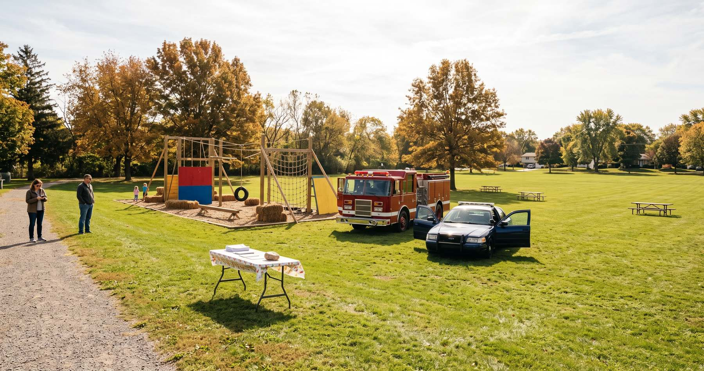
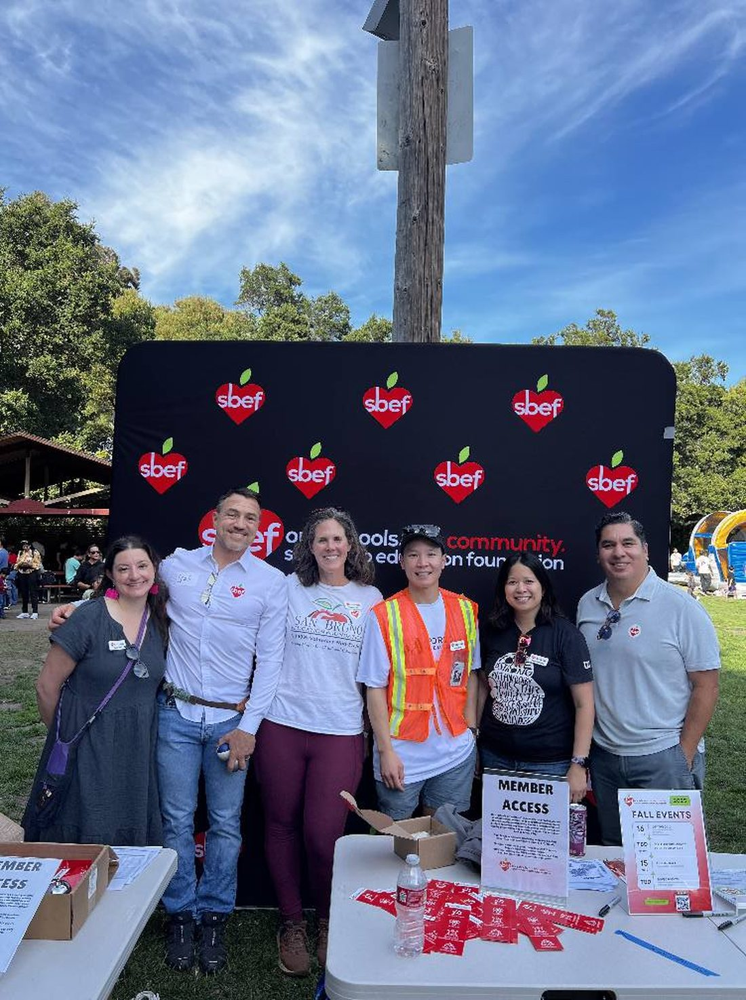

How Do You Know If Your AI Deployment Is Actually Working?
How Do You Know If Your AI Deployment Is Actually Working?
Usually you don’t. Adoption metrics tell you a system is running, not that it’s producing, and the people closest to the work almost always know the difference long before the dashboard does. What works is a cheap signal that arrives early, is owned by name, and doesn’t require anyone to be brave.

The park, 2016
In 2016 I was in my third year as president of the San Bruno Education Foundation, and I wanted us to have a day in the park.
I built an obstacle course for it with a couple of friends who gave up a Saturday. The people who helped me were generous fathers and mothers who brought their own kids along. It was a beautiful Saturday morning. As promised, around lunchtime, the San Bruno Fire Department parked a fire truck where children could climb into it. The San Bruno Police Department parked a police car beside it. Both departments did that for free, on a weekend, because they believed in our mission to support free and public education.
Every hard thing about that day went right. I was excited to see how many more kids and parents would arrive to enjoy the day with us!
Months earlier, a board member had warned me to start marketing early. Not suggested. Warned. He had run operations considerably more complicated than a day in a park, he could see what was coming, and it cost him nothing to tell me. I pushed forward with the event anyway.
Our marketing was a single Facebook post that I created and added $10 to get it in front of more people in our town. I posted it barely a couple of weeks out. That was the extent of my marketing.
I thought if I built it, they would come. As the clock moved forward, the park remained near-empty at noon. My board member’s warning echoed in my thoughts while I watched our kind first responders stand beside their impressive vehicles with almost no children there to climb into them.
While I was hoping for a couple hundred, only about a dozen families came. Some of the children on the obstacle course were the children of the parents who had built it.
What that day cost was not money. It was a Saturday of other people’s labor, two municipal departments’ goodwill spent on a nearly empty park, and a chunk of my own credibility with people who had backed me. The event did not run again for years. It was my fault and I know exactly why.
The bank
Nine years later, Commonwealth Bank of Australia deployed an AI voice bot in its call centres and told the Finance Sector Union it had cut call volumes by around 2,000 a week. In July 2025 the bank announced 45 customer service roles were no longer required, part of about 90 in total.1
The people still answering the phones said the opposite. Call volumes were rising, not falling. Management was paying overtime to cover them and pulling team leaders onto the phones to keep up.1
That is not a subtle signal. It is the loudest kind of signal there is: the cost of the thing you claim is shrinking is visibly going up, in your own overtime ledger, in front of the managers approving it.
The union took it to the Fair Work Commission. CBA reversed the decision, apologised, and conceded that its assessment “did not adequately consider all relevant business considerations, and this error meant the roles were not redundant.” The bank said it “should have been more thorough in our assessment of the roles required.” Affected staff were offered the choice to stay, redeploy, or take redundancy.1
CBA did not skip consultation. There was a process. Something got said, and something got discounted. The union’s national secretary, Julia Angrisano, called the outcome “a massive win for workers” and added, in the same breath, “this is no victory lap.”1
That is the same shape as my park. Not an absence of information. An absence of anything obliging anyone to act on it.
Not an isolated reversal
This pattern now has a paper trail. Forrester’s 2026 research found 55% of employers regret staff cuts driven by technology, and its analysts expect roughly half of AI-attributed layoffs to be quietly reversed.2 Gartner projects that by 2027, half of the companies that attributed headcount reductions to AI will rehire for similar functions under different job titles.3 Challenger, Gray & Christmas counted 60,620 announced US job cuts in March 2026, of which 15,341 ... about a quarter ... were attributed to AI.4
Rehiring under a different title is what a reversal looks like when nobody wants to file a correction.
Why the warning didn’t work
Here is the part I got wrong. I had the advisor. He was a shared-goal adversary, which is the thing every article on this subject tells you to go find. He wanted the foundation to succeed exactly as much as I did. He had no competing interest, no turf, no reason to soften it. He warned me early, when there was still time, and it cost him nothing to say.
Every precondition I would have recommended to somebody else was satisfied. It still failed.
What was missing was that nothing obliged me to act. I was the president. I could receive the warning, agree with it in the moment, feel appropriately warned, and then continue anyway... and no part of the structure would notice. Agreement is free. Agreement is what an org chart produces by default when the person at the top is pleasant and the stakes are a community event.
Agreement without commensurate action can hide an insidious loop underneath. Not truly listening repels the people worth listening to. They stop volunteering the hard thing, because volunteering it twice and watching it land nowhere teaches them what it’s worth. Such a loop ends up with leaders surrounded by sycophants, which means there is less and less to listen to, which makes not listening feel costless. Signals get quieter as problems get worse.
Bravery is not a control when it’s an exception. A resolution to listen better next time is an empty promise in the absence of supporting actions.
Welcome as integration
The reason this belongs in a conversation about AI is that a system can be ignored the same way a person can.
MIT’s NANDA initiative found roughly 95% of corporate AI pilots stall or fail to accelerate revenue.5 The follow-on detail is the one that matters: across some 300 deployments studied, the culprit was poor integration with existing workflows rather than model malfunction.5 The models mostly worked. The organizations around them did not change to let the work through.
You can buy the system and still not welcome it. No context, no access, no authority, no changed process, no one whose job it is to notice whether it’s producing anything. A talented hire who is ignored and a capable system that is isolated produce the identical symptom, and it is the symptom I produced in that park: capability present, contribution nearly zero.
The workforce has already noticed. A KPMG survey of about 48,000 people found a majority of employees either conceal their AI use from managers or don’t validate what it gives them.6 Separate research found 31% of workers admit to actively undermining their employer’s AI efforts.7 I wrote about the concealment half of that in When Does AI Use Become Shadow AI?, working out where personal productivity ends and shadow AI begins. Concealment and sabotage are what people do when a tool is imposed on them rather than integrated with them.
You cannot be your own adversary
If the signal has to come from somewhere, the obvious question is whether it can come from you.
In July 2025, METR ran a randomized controlled trial with 16 experienced open-source developers working on their own repositories ... projects averaging over 22,000 stars and more than a million lines of code ... across 246 real issues. Before starting, the developers predicted AI tooling would make them 24% faster. After finishing, they reported it had made them about 20% faster. Measured, they were 19% slower.8
That is roughly a 39-point gap between what expert practitioners felt and what was true, on their own code, about their own performance, in the direction that flattered the tool.
So the honest answer to how you know your deployment is working is that you probably don’t, and asking yourself harder will not fix it.
The organizational version of the fix is below. The individual version is a check you didn’t author and can’t quietly adjust. I built one of those after my own publish control reported six clean steps on work it had never actually inspected, and I wrote up what it caught in Is Your AI Agent Checking Its Work, or Just Describing It?. The property that makes it a control is not the code. It is that I cannot talk it out of a finding.
What actually fixed it
The San Bruno Education Foundation runs a Back to School BBQ now. 2026 is the fourth one. It draws over a thousand parents and children.
I want to be clear about who gets the credit here. The event was repaired after I left the chair, built by other people, as the foundation matured. What changed is structural, and every piece of it is more a function than a personality:
Marketing is somebody’s job, by name. SBEF has a Vice President of Marketing, Alexis Petru, and the role is a prominent seat. It is also filled by a fifteen-year communications professional, which helps ... but the seat existing is the part you can copy. In 2016 marketing and most everything else was mine, which diluted it down to nearly nothing.
Project management is distributed across the team rather than concentrated in the president. Dozens of volunteers, adults and older students from schools and community groups across San Bruno, each with an assigned job. There is a caterer. My own role now is that I show up with supplies and help where I’m needed.
Promotion is distributed to five school PTAs, each of which has a table at the event. This is the single best piece of design in the whole thing and the one a reader can steal outright. Five organizations whose interests already point the same direction, each with a reserved slot waiting for them. Nobody has to be talked into promoting it. The structure makes promoting it the obvious move.

Look at what is in that frame besides people. A branded backdrop. A check-in table. Two member-access signs. A board of fall events with dates and QR codes. Name badges, printed materials, a volunteer in a hi-vis vest with a lanyard, an inflatable behind it all. That is apparatus, and none of it depends on me. In 2016 the apparatus was an obstacle course and a Facebook post.
The event moved to a school. It runs at Parkside Intermediate now, one of the schools the foundation exists to support, rather than a city park. I am not out there building an obstacle course. Now it is a couple of inflatables, and it is a line item somebody else owns. The thing I made with my own hands on a Saturday in 2016 is now a thing that gets ordered.
And the tickets are free and reserved weeks in advance. I am writing this the evening before the event. More than 1,100 people have reserved a ticket. In 2016 I could not have told you how many people were coming until they either showed up or they didn’t.
Now watch what that number does, because this is the part that makes it a control and not just prettier marketing. The BBQ promises burgers and hot dogs to the first 600 people who sign up, with food held for registered guests until six o’clock. They passed 600 more than a week ago, and they knew it then ... while there was still time to buy more food, change the plan, or decide deliberately not to. In 2016 the equivalent discovery would have arrived at 4:30 in the afternoon, in a park, in front of everybody.
Here is the whole trajectory, because the shape of it is the argument. About 270 reservations on August 7, before the school PTAs had started promoting. 949 by August 16. More than 1,100 tonight. The signal moves when the mechanism moves, and it moved while I was writing about it, which does more than some dashboards I've been shown manage to do.
The same page did something else worth noticing. Reserving a free ticket puts a membership option in front of a parent at the moment they have already decided to come. Our treasurer, Annie Yoshiyama, reports that has now produced 22 new Advocate and Champion members and about $4,100 in new support ... from a page whose first job was counting heads.9 The signal was wired into the work rather than bolted alongside it, which is the whole of what MIT found missing in those 300 deployments.
None of those numbers are attendance. The event has not happened yet. That is the point of them: everything I have just told you was knowable before anybody walked through the gate, and in 2016 none of it was knowable at all.
The structure has also survived its own personnel, which is a credit to the people who worked to make it evolve. A long-serving board member retired in good standing this year and three new members joined for 2026, and the BBQ not only still works, but it’s been working better every year. Structure that outlives the people who built it is the strongest evidence available that it isn’t personalities.
One caveat I owe you, because leaving it out would make this tidier than it is. The dissent I have been best at receiving this year came from Claude, and it cost me nothing to receive ... no career, no mortgage, no colleagues watching me climb down in public. That is exactly why it was easy. It cuts the other way too: something that costs nothing to hear costs nothing to dismiss, and I can close the window. Receiving hard information gracefully is not a practice until there is a rule that binds you when you’re busy, or you’re tired, or you’d just rather not. And “I’ll listen” is not that rule. I don’t have that rule yet for the dissent I get from an AI. What I have is a habit and the discipline to maintain it, which is exactly what I had in 2016.
Listening to smart people and to data is only worth something to the extent we keep the disciplined focus to internalize the signal and act on it.
So the question I would ask about any AI deployment, in a bank or a foundation or a home office, is not whether people had a chance to raise concerns. The concerns are almost always there to be found. It is: what arrives on its own, early, without anyone having to be brave ... and can you name the person who will take zealous ownership of it?
Sources
- Commonwealth Bank of Australia, Fair Work Commission, August 2025. Stephanie Chalmers, “Commonwealth Bank backtracks on AI job cuts, apologises for ‘error’ as call volumes rise,” ABC News, 21 August 2025; David Marin-Guzman and James Eyers, “CBA U-turns on AI job cuts, calls back humans,” Australian Financial Review, 20 August 2025; additional reporting by Bloomberg and American Banker. ↩
- Forrester, 2026 research on technology-driven staff reductions. ↩
- Gartner projection on AI-attributed headcount reductions and rehiring by 2027. ↩
- Challenger, Gray & Christmas, March 2026 job cuts report. ↩
- MIT NANDA initiative on stalled corporate AI pilots, and the accompanying study of roughly 300 deployments identifying integration with existing workflows rather than model malfunction as the cause. ↩
- KPMG global study of approximately 48,000 respondents on workplace AI use and validation. ↩
- Writer / Workplace Intelligence, 2025, on employees undermining company AI initiatives. ↩
- METR, July 2025 randomized controlled trial: 16 experienced open-source developers, 246 real issues on their own repositories. Predicted 24% faster, self-reported 20% faster, measured 19% slower. ↩
- SBEF membership tiers: Advocate from $10/month or $120/year, Champion from $50/month or $600/year, both recurring. secure.givelively.org. Reservation and new-member figures reported by SBEF treasurer Annie Yoshiyama on 20 August 2026 — an internal record rather than a published figure. ↩